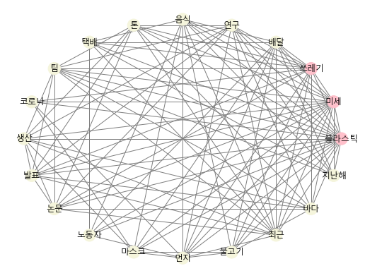

Semantic Network Analysis
Table of contents
*Semantic Network Analysis: 언어 네트워크 분석. 특정 문서 내 단어들 사이의 관계를 시각화해 내용을 한 눈에 파악할 수 있게 한다.
Semantic NA: English
- New York Times 기사를 예시로 활용
- 기사 내용 및 단어 사이의 관계를 한 눈에 파악하는 것이 목적
# 분석에 사용할 text 준비
import requests
from bs4 import BeautifulSoup
url = 'https://www.nytimes.com/2017/06/12/well/live/having-friends-is-good-for-you.html'
r = requests.get(url)
soup = BeautifulSoup(r.text, 'lxml')
title = soup.title.text.strip()
content = soup.find('section', attrs={'name':'articleBody'}).text
content
'Hurray for the HotBlack Coffee cafe in Toronto for declining to offer Wi-Fi to its customers. There are other such cafes, to be sure, including seven of the eight New York City locations of Café Grumpy.But it’s HotBlack’s reason for the electronic blackout that is cause for hosannas. As its president, Jimson Bienenstock, explained, his aim is to get customers to talk with one another instead of being buried in their portable devices.“It’s about creating a social vibe,” he told a New York Times reporter. “We’re a vehicle for human interaction, otherwise it’s just a commodity.” (생략)
전처리 (Preprocessing)
- Text Cleaning
import re filtered_content = re.sub('[^.,?!\s\w]','',content) # 정규표현식 re 활용. filtered_content = filtered_content.replace('Mr.', 'Mr').replace('Dr.', 'Dr') # 추가로 더 제거 - Case Conversion
filtered_content = filtered_content.lower() - Tokenization
import nltk word_tokens = nltk.word_tokenize(filtered_content) - POS tagging
tokens_pos = nltk.pos_tag(word_tokens) - Select Noun words
NN_words = [] for word, pos in tokens_pos: if 'NN' in pos: NN_words.append(word) - Lemmatization
# nltk의 WordNetLemmatizer을 이용 wlem = nltk.WordNetLemmatizer() lemmatized_words = [] for word in NN_words: new_word = wlem.lemmatize(word) lemmatized_words.append(new_word) - Stopwords removal
# 1차적으로 nltk에서 제공하는 불용어사전을 이용해서 불용어를 제거 from nltk.corpus import stopwords stopwords_list = stopwords.words('english') #nltk에서 제공하는 불용어사전 이용 unique_NN_words = set(lemmatized_words) #set을 사용해 중복 제거 final_NN_words = lemmatized_words for word in unique_NN_words: if word in stopwords_list: while word in final_NN_words: final_NN_words.remove(word) # 아래와 같이 추가로 직접 만든 불용어사전을 이용해 불용어 제거 customized_stopwords = ['be', 'today', 'yesterday', 'new', 'york', 'time'] # 직접 만든 불용어 사전 unique_NN_words1 = set(final_NN_words) for word in unique_NN_words1: if word in customized_stopwords: while word in final_NN_words: final_NN_words.remove(word) ## final_NN_words 출력해보기 print(final_NN_words)['hurray', 'hotblack', 'coffee', 'cafe', 'toronto', 'wifi', 'customer', 'cafe', 'city', 'location', 'café', 'grumpy.but', 'hotblacks', 'reason', 'blackout', 'cause', 'hosanna', 'president', 'jimson', 'bienenstock', 'aim', 'customer', 'devices.its', 'vibe', 'vehicle', 'interaction', 'commodity.what', 'idea', 'bienenstock', 'science', 'decade', 'interaction', 'contributor', 'health', 'evidence', 'value', 'connection', 'experience', 'morning', 'walk', 'woman', 'swim', 'locker', 'room', 'ymca', 'use', 'device', 'locker', 'room', 'experience', 'friend', 'share', 'joy', 'sorrow', 'woman', 'problem', 'board', 'advice', 'counsel', 'laugh', 'day.and', 'study', 'life.as', 'harvard', 'health', 'watch', 'dozen', 'study', 'people', 'relationship', 'family', 'friend', 'community', 'health', 'problem', 'longer.in', 'study', 'men', 'woman', 'county', 'calif.', 'berkman', 'syme', 'people', 'others', 'nineyear', 'study', 'people', 'tie', 'john', 'robbins', 'book', 'health', 'longevity', 'difference', 'survival', 'people', 'age', 'gender', 'health', 'practice', 'health', 'status', 'fact', 'researcher', 'tie', 'lifestyle', 'smoking', 'obesity', 'lack', 'exercise', 'tie', 'living', 'habit', 'mr', 'robbins', 'people', 'lifestyle', 'tie', 'all.in', 'study', 'journal', 'medicine', 'researcher', 'health', 'insurance', 'plan', 'men', 'heart', 'attack', 'connection', 'people', 'quarter', 'risk', 'death', 'year', 'connectedness.researchers', 'duke', 'university', 'center', 'tie', 'death', 'people', 'condition', 'brummett', (생략)]
Semantic Network 형성
- Frequency Analysis
- 단어의 빈도를 파악하고, 가장 많이 나오는 단어 10개를 추출
from collections import Counter c = Counter(final_NN_words) print(c.most_common(10)) # 가장 빈번하게 나오는 10개의 단어 출력 # 가장 많이 나오는 단어 10개 저장 list_of_words = [] for word, count in c.most_common(10): list_of_words.append(word) print(list_of_words)[('health', 11), ('people', 10), ('study', 6), ('tie', 6), ('researcher', 6), ('interaction', 5), ('friend', 4), ('others', 4), ('exercise', 4), ('connection', 3)] ['health', 'people', 'study', 'tie', 'researcher', 'interaction', 'friend', 'others', 'exercise', 'connection'] - 원본 text 문장 단위로 쪼개기
# 위에서 만들어두었던 filtered_content을 활용해서 문장을 쪼갬. (., ?, ! 등 문장 구분자 꼭 필요) sentences = filtered_content.split('.\n') sentences1 = [] sentences2 = [] sentences3 = [] for sentence in sentences: sentences1.extend(sentence.split('. ')) for sentence in sentences1: sentences2.extend(sentence.split('!')) for sentence in sentences2: sentences3.extend(sentence.split('?')) article_sentences = sentences3 print(article_sentences) ## 각 문장을 element로 담고 있는 list['hurray for the hotblack coffee cafe in toronto for declining to offer wifi to its customers', 'there are other such cafes, to be sure, including seven of the eight new york city locations of café grumpy.but its hotblacks reason for the electronic blackout that is cause for hosannas', 'as its president, jimson bienenstock, explained, his aim is to get customers to talk with one another instead of being buried in their portable devices.its about creating a social vibe, he told a new york times reporter', 'were a vehicle for human interaction, otherwise its just a commodity.what a novel idea', ' perhaps mr bienenstock instinctively knows what medical science has been increasingly demonstrating for decades social interaction is a critically important contributor to good health and longevity.personally, i dont need researchbased evidence to appreciate the value of making and maintaining social connections', 'i experience it daily during my morning walk with up to three women, then before and after my swim in the locker room of the ymca where the use of electronic devices is not allowed.the locker room experience has been surprisingly rewarding', 'ive made many new friends with whom i can share both joys and sorrows', (생략)] - 단어들을 node로 생성
# 가장 많이 출현하는 10개의 명사 단어들을 node로 하는 network 생성 import networkx as nx G = nx.Graph() # undirected graph 생성 G.add_nodes_from(list_of_words) # node 생성 (가장 많았던 명사 단어 10개) print(G.nodes()) # nodes print(G.edges()) # edge, 즉 node 간의 관계는 아직 없는 상황['health', 'people', 'study', 'tie', 'researcher', 'interaction', 'friend', 'others', 'exercise', 'connection'] [] - edge(=tie) 만들기
import itertools for sentence in article_sentences: # 각 문장을 element로 담고 있는 list sentence = sentence.lower() word_tokens = nltk.word_tokenize(sentence) tokens_pos = nltk.pos_tag(word_tokens) NN_words = [] for word, pos in tokens_pos: if 'NN' in pos: NN_words.append(word) wlem = nltk.WordNetLemmatizer() lemmatized_words = [] for word in NN_words: new_word = wlem.lemmatize(word) lemmatized_words.append(new_word) selected_words = [] for word in lemmatized_words: if word in list_of_words: selected_words.append(word) # 빈도 top 10에 포함된 단어만 append selected_words = set(selected_words) # 중복을 제거하기 위해 set(집합자료형)으로 변환 for pair in list(itertools.combinations(list(selected_words), 2)): # itertools.combinations: selected_words 리스트에서 2개씩 골라 조합을 만들어준다 if pair in G.edges(): weight = G[pair[0]][pair[1]]['weight'] weight += 1 G[pair[0]][pair[1]]['weight'] = weight else: G.add_edge(pair[0], pair[1], weight=1) # 생성된 edge 확인해보기 print(nx.get_edge_attributes(G, 'weight')){('health', 'connection'): 2, ('health', 'interaction'): 3, ('health', 'people'): 4, ('health', 'friend'): 1, ('health', 'study'): 3, ('health', 'tie'): 3, ('health', 'others'): 1, ('health', 'researcher'): 3, ('health', 'exercise'): 1, ('people', 'friend'): 1, ('people', 'study'): 4, ('people', 'tie'): 3, ('people', 'others'): 3, ('people', 'connection'): 2, ('people', 'researcher'): 3, ('people', 'interaction'): 1, ('study', 'friend'): 1, ('study', 'tie'): 2, ('study', 'others'): 2, ('study', 'connection'): 1, ('study', 'researcher'): 1, ('tie', 'others'): 1, ('tie', 'exercise'): 1, ('tie', 'researcher'): 3, ('tie', 'connection'): 1, ('tie', 'interaction'): 1, ('researcher', 'exercise'): 2, ('researcher', 'connection'): 2, ('researcher', 'interaction'): 2, ('researcher', 'others'): 1, ('interaction', 'connection'): 1, ('interaction', 'exercise'): 1, ('friend', 'exercise'): 1, ('others', 'connection'): 1}
+) itertools: 효율적인 반복을 가능하게 하는 library
-
itertools.permutations(list, num): 리스트의 원소들을 (num)개씩 골라 순열을 만들어준다 -
itertools.combinations(list, num): 리스트의 원소들을 (num)개씩 골라 조합을 만들어준다- ※ 조합은 순열과 달리 순서가 없음
>> 예시:
alphabets = ['A', 'B', 'C']
print(list(itertools.permutations(alphabets, 2)))
[('A', 'B'), ('A', 'C'), ('B', 'A'), ('B', 'C'), ('C', 'A'), ('C', 'B')]
print(list(itertools.combinations(alphabets, 2)))
# 조합은 순서가 중요치 않기에, ('A', 'B')와 ('B', 'A')를 같은 것으로 간주, 한 개만 만든다.
[('A', 'B'), ('A', 'C'), ('B', 'C')]
네트워크 시각화
- networkx의 다양한 layout: https://networkx.org/documentation/stable/reference/drawing.html#layout
import matplotlib.pyplot as plt
## 노드의 degree에 따라 color 다르게 설정하기
color_map = []
for node in G:
if G.degree(node) >= 8: # 중요한 노드 (degree가 8 이상)
color_map.append('pink')
else:
color_map.append('beige')
plt.figure(figsize=(8, 6)) # size 설정
pos = nx.spring_layout(G, scale=0.2) # spring layout 사용, 글씨가 잘리는 것을 방지하기 위해 scale=0.2로 조정
nx.draw_networkx(G, pos, node_color=color_map, edge_color='grey')
plt.axis('off') # turn off axis
plt.show()
→ 사람들 간의 친구 관계가 건강에 중요하다는 연구에 대한 내용이라고 유추 가능.
+) circular layout으로도 시각화해보기
plt.figure(figsize=(8, 7))
pos = nx.circular_layout(G, scale=0.2) # circular layout 모양
nx.draw_networkx(G, pos, node_color=color_map, edge_color='grey') # 위에서 지정한 color_map 그대로 사용
plt.axis('off') # turn off axis
plt.show()
Centrality 계산
: Centrality를 계산해 단어의 중요도 판단하기
- 예시로 Degree Centrality만 계산해 봄 (+. 다양한 Centrality 계산법)
# degree centrality
print(nx.degree_centrality(G))
{'health': 1.0, 'people': 0.8888888888888888, 'study': 0.7777777777777777, 'tie': 0.8888888888888888, 'researcher': 0.8888888888888888, 'interaction': 0.6666666666666666, 'friend': 0.4444444444444444, 'others': 0.6666666666666666, 'exercise': 0.5555555555555556, 'connection': 0.7777777777777777}
Semantic NA: 한글
- 중앙일보(joins.com) 기사를 예시로 활용
# 분석에 사용할 text 준비
import requests
from bs4 import BeautifulSoup
url = 'https://news.joins.com/article/23904235'
r = requests.get(url)
soup = BeautifulSoup(r.text, 'lxml')
title = soup.select_one('#article_title').text.strip()
content = soup.select_one('#article_body').text.strip()
print(content)
강찬수 환경전문기자 택배 노동자들이 잇따라 숨지고 있다. 전국 택배연대 노조 등에 따르면 이달에만 CJ대한통운 서울 강북지점, 한진택배 서울 동대문지사, 경북 칠곡 쿠팡 물류센터에서 일했던 노동자가 연달아 숨졌다. 배달 물량 급증으로 인한 과로사라는 지적이 쏟아진다. 실제로 국토교통부가 국회에 제출한 자료에 따르면, 2020년 6월 생활물류 택배 물동량은 2억 9340만 개로 지난해 6월보다 36.3% 늘었다. 신종 코로나바이러스 감염증(코로나19) 탓에 시민들이 외출과 매장 쇼핑을 꺼린 탓이다. 1회용 마스크 재질이 플라스틱먼지 치솟으면 음식 배달도 늘어낙동강 물고기에도 미세플라스틱다회용기 사용 등 대안모델 필요 배달음식 주문도 늘었다. 공정거래위원회에 따르면 올해 국내 배달 음식 시장 규모는 대략 20조원으로, 지난해보다 17%가량 증가할 것으로 전망된다. 당장은 노동자의 열악한 상황이 문제지만, 겹겹이 포장된 택배 상자와 플라스틱 용기가 가득 든 배달 음식은 심각한 환경문제이기도 하다. 코로나19 대응 과정에서도 플라스틱 쓰레기는 쏟아진다. 마스크도 플라스틱으로 만들어진다. 세계보건기구(WHO)는 코로나19 대응을 위해 세계적으로 매달 8900만 개의 의료용 마스크와 7600만 개의 검사용 장갑이 필요할 것으로 추정했다. 일반 시민이 사용하는 것은 제외한 수치다. 국내에서만 매주 2억장의 마스크를 생산한다. 경기도 수원시 자원순환센터에 쌓인 플라스틱 재활용 쓰레기. 최근 택배와 음식 배달이 늘면서 플라스틱 쓰레기도 크게 늘었다. [연합뉴스] 최근에는 미세먼지 오염이 플라스틱 쓰레기를 늘린다는 연구 결과도 나왔다. 싱가포르 연구팀이 지난 22일 ‘네이처 인간 행동’ 저널에 발표한 논문이다. 베이징 등 중국 3개 도시에서 실시한 조사에서 미세먼지 농도가 ㎥당 100㎍(마이크로그램) 상승하면, 사무실 노동자의 음식 배달 주문이 43%나 늘었다. 중국 전역으로 확대하면 배달 음식이 260만 개 늘어난다는 의미다. (생략)
전처리 (Preprocessing)
- Text Cleaning
import re cleaned_content = re.sub('[^,.?!\w\s]','', content) # 정규표현식 사용 cleaned_content = cleaned_content.replace('강찬수', '').replace('연합뉴스', '').replace('환경전문기자', '') # 추가로 더 제거 - Tokenization + Lemmatization + POS tagging
from konlpy.tag import Kkma kkma = Kkma() NN_words = [] kkma_pos = kkma.pos(cleaned_content) for word, pos in kkma_pos: if 'NN' in pos: NN_words.append(word)['택배', '노동자', '전국', '택배', '연대', '노조', '등', '이달', '통운', '서울', '강북', '지점', '한진', '택배', '서울', '동대문', '지사', '경북', '곡', '물류', '센터', '노동자', '배달', '물량', '급증', '과로', '사', '지적', '국토', '교통부', '국회', '제출', (생략)] - Stopwords 제거
customized_stopwords = ['것', '등', '탓', '바', '용', '년', '개', '당', '면', '말'] unique_NN_words = set(NN_words) for word in unique_NN_words: if word in customized_stopwords: while word in NN_words: NN_words.remove(word)
Semantic Network 형성
- 단어의 빈도 파악
from collections import Counter c = Counter(NN_words) print(c.most_common(20)) # 가장 빈번하게 나오는 20개의 단어 출력 # 가장 많이 나오는 단어 20개 저장 list_of_words = [] for word, count in c.most_common(20): list_of_words.append(word)[('플라스틱', 28), ('미세', 13), ('쓰레기', 12), ('배달', 8), ('연구', 8), ('음식', 7), ('톤', 7), ('택배', 6), ('팀', 6), ('코로나', 5), ('생산', 5), ('발표', 5), ('논문', 5), ('노동자', 4), ('마스크', 4), ('먼지', 4), ('물고기', 4), ('최근', 4), ('바다', 4), ('지난해', 3)] - 원본 text 문장 단위로 쪼개기
sentences = cleaned_content.split('.\n') sentences1 = [] sentences2 = [] sentences3 = [] for sentence in sentences: sentences1.extend(sentence.strip().split('. ')) for sentence in sentences1: sentences2.extend(sentence.strip().split('!')) for sentence in sentences2: sentences3.extend(sentence.strip().split('?')) article_sentences = sentences3 print(article_sentences)['택배 노동자들이 잇따라 숨지고 있다', '전국 택배연대 노조 등에 따르면 이달에만 CJ대한통운 서울 강북지점, 한진택배 서울 동대문지사, 경북 칠곡 쿠팡 물류센터에서 일했던 노동자가 연달아 숨졌다', '배달 물량 급증으로 인한 과로사라는 지적이 쏟아진다', '실제로 국토교통부가 국회에 제출한 자료에 따르면, 2020년 6월 생활물류 택배 물동량은 2억 9340만 개로 지난해 6월보다 36.3 늘었다', '신종 코로나바이러스 감염증코로나19 탓에 시민들이 외출과 매장 쇼핑을 꺼린 탓이다', '1회용 마스크 재질이 플라스틱먼지 치솟으면 음식 배달도 늘어낙동강 물고기에도 미세플라스틱다회용기 사용 등 대안모델 필요 배달음식 주문도 늘었다', '공정거래위원회에 따르면 올해 국내 배달 음식 시장 규모는 대략 20조원으로, 지난해보다 17가량 증가할 것으로 전망된다', '당장은 노동자의 열악한 상황이 문제지만, 겹겹이 포장된 택배 상자와 플라스틱 용기가 가득 든 배달 음식은 심각한 환경문제이기도 하다', '코로나19 대응 과정에서도 플라스틱 쓰레기는 쏟아진다', '마스크도 플라스틱으로 만들어진다', '세계보건기구WHO는 코로나19 대응을 위해 세계적으로 매달 8900만 개의 의료용 마스크와 7600만 개의 검사용 장갑이 필요할 것으로 추정했다', '일반 시민이 사용하는 것은 제외한 수치다', '국내에서만 매주 2억장의 마스크를 생산한다', '경기도 수원시 자원순환센터에 쌓인 플라스틱 재활용 쓰레기', '최근 택배와 음식 배달이 늘면서 플라스틱 쓰레기도 크게 늘었다', (생략)] - 단어들을 node로 생성
# 가장 많이 출현하는 20개의 명사 단어들에 대해서 네트워크 생성하기 import networkx as nx G = nx.Graph() G.add_nodes_from(list_of_words) # node 생성 (가장 많았던 명사 단어 20개) print(G.nodes()) # nodes print(G.edges()) # edge, 즉 node 간의 관계는 아직 없는 상황['플라스틱', '미세', '쓰레기', '배달', '연구', '음식', '톤', '택배', '팀', '코로나', '생산', '발표', '논문', '노동자', '마스크', '먼지', '물고기', '최근', '바다', '지난해'] [] - edge(=tie) 만들기
import itertools for sentence in article_sentences: selected_words = [] NN_words = [] kkma_pos = kkma.pos(sentence) for word, pos in kkma_pos: if 'NN' in pos: NN_words.append(word) for word in NN_words: if word in list_of_words: selected_words.append(word) selected_words = set(selected_words) for pair in list(itertools.combinations(list(selected_words), 2)): if pair in G.edges(): weight = G[pair[0]][pair[1]]['weight'] weight += 1 G[pair[0]][pair[1]]['weight'] = weight else: G.add_edge(pair[0], pair[1], weight=1 ) # 생성된 edge 확인해보기 print(nx.get_edge_attributes(G, 'weight')){('플라스틱', '음식'): 3, ('플라스틱', '미세'): 9, ('플라스틱', '배달'): 3, ('플라스틱', '먼지'): 2, ('플라스틱', '물고기'): 2, ('플라스틱', '마스크'): 2, ('플라스틱', '노동자'): 1, ('플라스틱', '택배'): 2, ('플라스틱', '쓰레기'): 11, ('플라스틱', '코로나'): 1, ('플라스틱', '최근'): 4, ('플라스틱', '연구'): 6, ('플라스틱', '팀'): 4, ('플라스틱', '생산'): 3, ('플라스틱', '톤'): 3, ('플라스틱', '발표'): 3, ('플라스틱', '논문'): 3, ('플라스틱', '지난해'): 1, ('플라스틱', '바다'): 1, ('미세', '음식'): 2, ('미세', '배달'): 2, ('미세', '먼지'): 4, ('미세', '물고기'): 2, ('미세', '마스크'): 1, ('미세', '최근'): 1, ('미세', '쓰레기'): 2, ('미세', '연구'): 4, ('미세', '노동자'): 1, ('미세', '코로나'): 1, ('미세', '바다'): 1, ('미세', '팀'): 2, ('미세', '생산'): 1, ('미세', '톤'): 1, ('미세', '발표'): 1, ('미세', '논문'): 1, ('미세', '지난해'): 1, ('쓰레기', '코로나'): 1, ('쓰레기', '최근'): 2, ('쓰레기', '음식'): 1, ('쓰레기', '배달'): 1, ('쓰레기', '택배'): 1, ('쓰레기', '연구'): 2, ('쓰레기', '먼지'): 1, ('쓰레기', '바다'): 2, ('쓰레기', '팀'): 1, ('쓰레기', '톤'): 1, ('쓰레기', '발표'): 1, ('쓰레기', '논문'): 1, ('쓰레기', '물고기'): 1, ('배달', '음식'): 6, ('배달', '먼지'): 2, ('배달', '물고기'): 1, ('배달', '마스크'): 1, ('배달', '지난해'): 1, ('배달', '노동자'): 2, ('배달', '택배'): 2, ('배달', '최근'): 1, ('연구', '최근'): 3, ('연구', '먼지'): 1, ('연구', '논문'): 5, (생략)}
네트워크 시각화
import matplotlib.pyplot as plt
from matplotlib import font_manager as fm
## 한글로 시각화할 경우, 아래와 같이 font를 가져와줘야 함
path = 'c:/Windows/Fonts/malgun.ttf'
font_name = fm.FontProperties(fname=path).get_name()
## 노드의 degree에 따라 color 다르게 설정하기
color_map = []
for node in G:
if G.degree(node) >= 15: # 중요한 노드 (degree가 15 이상)
color_map.append('pink')
else:
color_map.append('beige')
plt.figure(figsize=(9, 7))
pos = nx.spring_layout(G) # spring layout 사용
nx.draw_networkx(G, pos, node_color=color_map, edge_color='grey', font_family=font_name)
plt.axis('off') # turn off axis
plt.show()
→ 플라스틱 쓰레기, 특히 미세 플라스틱으로 인한 문제에 관한 내용이라고 유추 가능.
+) circular layout으로도 시각화해보기
- node가 많은 경우, circular layout으로 시각화하면 개별 node와 edge를 더 쉽게 식별 가능
plt.figure(figsize=(9, 7))
pos = nx.circular_layout(G)
nx.draw_networkx(G, pos, node_color=color_map, edge_color='grey', font_family=font_name)
plt.axis('off')
plt.show()

Centrality 계산
: Centrality를 계산해 단어의 중요도 판단하기
# degree centrality
print(nx.degree_centrality(G))
{'플라스틱': 1.0, '미세': 0.9473684210526315, '쓰레기': 0.7894736842105263, '배달': 0.5789473684210527, '연구': 0.631578947368421, '음식': 0.5789473684210527, '톤': 0.5263157894736842, '택배': 0.3684210526315789, '팀': 0.5789473684210527, '코로나': 0.2631578947368421, '생산': 0.5263157894736842, '발표': 0.5263157894736842, '논문': 0.5263157894736842, '노동자': 0.3157894736842105, '마스크': 0.42105263157894735, '먼지': 0.5789473684210527, '물고기': 0.42105263157894735, '최근': 0.6842105263157894, '바다': 0.5263157894736842, '지난해': 0.3684210526315789}